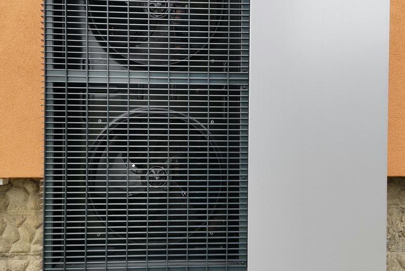

Marek Ožog
Tepelná čerpadla, klimatizace, solární systémy, voda, topení a plyn z Orlové-Lutyně. Podnikám od roku 1996 a dělám kompletní servis značek Daikin, Viessmann a Samsung.

S čím Vám pomůžu
Od návrhu přes montáž po servis. Když technika v domě funguje jako jeden celek, ušetříte za energie i za opravy.
„Výborná firma, kvalitní práce a příznivá cena. Mohu jen doporučit.“
zákazník na Firmy.cz
„Profesionální přístup, rychlost, ochota, orientace v oboru.“
zákaznice na Firmy.cz
- Adresa
- Klidná 550, 735 14 Orlová-Lutyně
- Kdy volat
- po–pá 8:00–16:00
- IČO
- 64595161